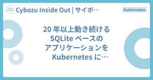
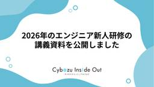

Cybozu Inside Out | サイボウズエンジニアのブログ
https://blog.cybozu.io/
サイボウズ株式会社、サイボウズ・ラボ株式会社のエンジニアが提供する技術ブログです。製品やサービスの開発、運用で得た技術情報やエンジニアの活動、採用情報などをお届けします。
フィード

iOSDC Japan 2026 にゴールドスポンサーとして協賛します！
Cybozu Inside Out | サイボウズエンジニアのブログ
こんにちは、iOSエンジニアの @tochi86_ です。 今年も iOSDC Japan の時期が近づいてまいりました。 サイボウズは、2026年9月11日から9月13日に開催される iOSDC Japan 2026 に、ゴールドスポンサーとして協賛いたします！ 「iOSDC Japan」とは、iOS関連技術をテーマとした iOS技術者のためのカンファレンスです。 今年も現地開催＋オンライン配信でのハイブリッド開催が予定されており、有明セントラルタワーホール＆カンファレンスにて開催されます。 iosdc.jp サイボウズでは、kintone / サイボウズOffice / Garoon の3…
6時間前

Mythos 対策プロジェクトの 2 ヶ月(ハーネス編) 2
2
Cybozu Inside Out | サイボウズエンジニアのブログ
Mythos 級 AI 公開に備えてサイボウズが実施した、セキュリティスキャンハーネス開発プロジェクト "Logos" について。今回は、中核となるハーネス "Horos" について解説します。
8時間前

Mythos 対策プロジェクトの 2 ヶ月(概要編) 2
Cybozu Inside Out | サイボウズエンジニアのブログ
Mythos 級 AI 公開に備えてサイボウズが実施した、セキュリティスキャンハーネス開発プロジェクト "Logos" について、連載で紹介します。
1日前

20 年以上動き続ける SQLite ベースのアプリケーションを Kubernetes に移行しています 2
Cybozu Inside Out | サイボウズエンジニアのブログ
こんにちは！ソフトウェアエンジニアとして活動している @nissy_dev です。 サイボウズでは、各プロダクトを新しいインフラ基盤「Neco」に移行する取り組みを進めています。サイボウズ Office とメールワイズも例外ではなく、私たちのチームは 2024 年頃からこの 2 つの製品の移行に取り組んできました。 この記事では、その中から特に大変だった点や、設計・運用で工夫したトピックについて紹介します。 目次 なぜ Kubernetes に移行するのか SQLite を利用する CGI を Kubernetes で動かす ステートフルワークロードと CGI の性質 Pod とボリュームの配…
6日前

2026年のエンジニア新人研修の講義資料を公開しました 1
Cybozu Inside Out | サイボウズエンジニアのブログ
開発本部 開発組織デザインチームでオンボーディングを担当している久宗(@tignyax)です。 2026年もエンジニア新人研修を行いましたので、研修の概要と、講義資料および講義動画を公開いたします。 2026年のエンジニア研修について 新卒メンバーの研修の流れとしては、「人事全体研修→エンジニア研修→職能受入研修→配属先チーム研修」と進んでいきます。エンジニア研修としては、4/23(木)~5/29(金)の期間で「講義実習」と「実践演習」の2フェーズで行われました。本記事では、研修の概要と社外公開可能な資料および動画を紹介いたします。 コンセプト 今年のエンジニア研修のコンセプトは去年同様、以下…
7日前

サイボウズは、DroidKaigi 2026 にゴールドスポンサーとして参加します！
Cybozu Inside Out | サイボウズエンジニアのブログ
こんにちは、kintone 開発チームの Android エンジニア、トニオ（@tonionagauzzi）です。 サイボウズは、2026年9月1日(火)〜3日(木) にベルサール渋谷ガーデンで開催される DroidKaigi 2026 にゴールドスポンサーとして参加します！ DroidKaigi とサイボウズ DroidKaigi は、日本最大級の Android 開発者カンファレンスとして、2015年から継続して開催されています。毎年多くの Android 関係者が参加し、とても盛り上がっています。 このカンファレンスでは、Android の最新の技術情報や開発手法に関するさまざまなセッシ…
8日前
中高生にキャリアを届ける。Waffle Clubへの協賛と社員登壇を続けています
Cybozu Inside Out | サイボウズエンジニアのブログ
こんにちは！開発広報チームのhokatomo（@tomoko_and）です。 サイボウズでは7月に開催された女子・ノンバイナリーの中高生を対象としたオンラインイベント「Waffle Club」への協賛をし、QAエンジニアの水野菜々穂さんが登壇をしました。 特定非営利活動法人Waffleが主催するイベントで、Waffleの「テクノロジー分野のジェンダーギャップを解決する」というミッションに共感し、協賛を5年以上続けています。 Waffle Clubとは プログラミング体験や社会人のキャリアトークを通じて、中高生がテクノロジーや進路の選択肢を広げるきっかけを作るイベントです。 今回は、水野さんによ…
13日前
kintone Androidチームの1年目を振り返る
Cybozu Inside Out | サイボウズエンジニアのブログ
この記事は、CYBOZU SUMMER BLOG FES '26の記事です。 はじめに 25新卒入社でkintoneのAndroidアプリ開発チーム所属の市村です。本記事では2年目になった私が、どんな1年目だったかを振り返ります。1年目のロールモデルの一例として参考にしてもらえたり、kintone Androidがどういうチームか知ってもらえたら幸いです。 私は2025年7月に、kintone Androidチームに配属されました。サイボウズの社員歴はすでに1年半に迫りつつありますが、配属を基準に考えるとちょうど1年ほど経っているので、2025年の7月から現在までの振り返りの内容が中心になって…
1ヶ月前
4社合同イベント！Mobile Tech Flex #2『私たちの越境話』を開催しました！
Cybozu Inside Out | サイボウズエンジニアのブログ
この記事は、CYBOZU SUMMER BLOG FES '26の記事です。 こんにちは！サイボウズのトニオ（@tonionagauzzi）です。普段はkintone開発チームにてAndroidアプリを主に開発しています。 2026年7月23日（木）に、ディップ株式会社、株式会社ヤプリ、株式会社Voicy、サイボウズ株式会社の4社合同モバイル勉強会、Mobile Tech Flex #2 〜4社合同！私たちが「越境」した話〜をサイボウズ東京オフィスで開催しました。本記事ではその当日の様子をレポートします！ mobiletechflex.connpass.com イベントの概要 Mobile T…
1ヶ月前
福岡で「替え玉」に因んだWebフロントエンド勉強会をやります！
Cybozu Inside Out | サイボウズエンジニアのブログ
この記事は、CYBOZU SUMMER BLOG FES '26の記事です。 こんにちは、フロントエンドエンジニアのおぐえもん（@oguemon_com）です。 今年の9月に、「フロントエンドカンファレンス福岡」（FECF 2026）が7年振りに開催されます。サイボウズはFECF 2026に「Gold Sponsors」として支援している他、当社エンジニア（コサキン）の登壇予定もございます。 さて、サイボウズでは、そんなFECF 2026の開催前日にあたる9月11日（金）の夜に、当社福岡オフィスでWebフロントエンドの勉強会を開催します！ その名も、「替え玉.web」です。 替え玉.webのイ…
1ヶ月前
EM採用を始めて1年、新しいEMが組織で活躍するまでに取り組んだこと
Cybozu Inside Out | サイボウズエンジニアのブログ
この記事は、CYBOZU SUMMER BLOG FES '26の記事です。 こんにちは。kintoneの開発組織でEMをしている上岡（@ueokande）です。サイボウズでは2025年から本格的にkintoneのEM採用を進めてきました。EM採用を進める中で、採用活動だけでは見えなかった課題や発見がありました。当初は「採用できれば成功」と考えていましたが、実際は採用後のほうが重要で意思決定が難しいことが分かりました。 この記事ではこの1年間のEM採用を振り返りながら、採用・配属・オンボーディングを通じて得られた学びと、これからのチャレンジについて紹介します。 背景：なぜkintoneのEM採…
1ヶ月前
kube-state-metrics で Deployment Sharding を採用した話
Cybozu Inside Out | サイボウズエンジニアのブログ
kube-state-metrics で Deployment Sharding を採用した話 この記事は、CYBOZU SUMMER BLOG FES '26の記事です。 こんにちは、クラウド基盤本部の藤井です！ この記事では、Neco で kube-state-metrics をシャーディング構成へ移行するにあたり、検討した方式と Deployment Sharding を採用した理由を、kube-state-metrics v2.19.1 の実装をもとに紹介します。 Neco については紹介ブログもあるのでこちらを参照してください！ blog.cybozu.io なお、本記事の AI I…
1ヶ月前
テナントごとに異なるOIDC Issuerへ対応した話
Cybozu Inside Out | サイボウズエンジニアのブログ
この記事は、CYBOZU SUMMER BLOG FES '26の記事です。 kintone dashboard Teamの開発をしている まつもと です。これまで、kintoneの開発や、海外向けの kintone (kintone.com) の Amazon Web Services (AWS) への移行や、その運用などをしてきました。 kintoneとは別基盤で動くダッシュボードに、テナントごとに違うOIDCエンドポイントをどう繋ぐか サイボウズでは、kintoneの性能や利用状況を可視化する「ダッシュボード」を提供しています。kintone本体がサイボウズのクラウド基盤で動いているのに…
1ヶ月前
govulncheckで脆弱性スキャナーの偽陽性を削減する
Cybozu Inside Out | サイボウズエンジニアのブログ
この記事は、CYBOZU SUMMER BLOG FES '26の記事です。 Cloud Platform部のpddgです。 サプライチェーン攻撃やAIによる脆弱性の検出が盛んになった昨今、迅速な影響の把握と更新の適用が求められ、ソフトウェアが抱える依存関係の脆弱性の検出はその重要性が増してきています。一方で、ナイーブに脆弱性を検出するだけでは誤検知（偽陽性）が多くなり、開発者の負担が増えることになります。 Goのプロジェクトでは、govulncheckを用いることでモジュールレベルではなく関数のシンボルレベルで影響の有無を検出でき、偽陽性を削減できます。一般的なOSSスキャナーのスキャンとg…
1ヶ月前
なぜ Studio は W3C に入ったのか、その真意を聞いてみた
Cybozu Inside Out | サイボウズエンジニアのブログ
W3C 会員企業同士である Studio とサイボウズで、コラボブログを企画しました。第一弾は Studio の CTO 諸田さんをサイボウズにお招きし、 W3C 加入の経緯やビジョンをお聞きしました。
1ヶ月前
チャットダイアログの初期フォーカス位置を考える
Cybozu Inside Out | サイボウズエンジニアのブログ
この記事は、CYBOZU SUMMER BLOG FES '26の記事です。 こんにちは！サイボウズでフロントエンドエンジニアをしている たくぼう です！ kintoneでは、現在フロントエンドの刷新を進めています。刷新では、単に技術スタックを改めるだけでなく、アクセシビリティの対応も併せて実施しています。 私が所属するチームが刷新を手がけている「レコード一覧画面」には、「レコード一覧分析AI」というAI分析・要約機能があります。 刷新中の画面にこの機能を盛り込むにあたり、「レコード一覧画面」と「レコード一覧分析AI」のチャットダイアログの間でフォーカスをどう受け渡すかを検討しました。 あわせ…
1ヶ月前
kintone フロントエンド技術標準ってなに？
Cybozu Inside Out | サイボウズエンジニアのブログ
この記事は、CYBOZU SUMMER BLOG FES '26の記事です。 kintone フロントエンド開発に "技術標準" ができていました どうも、kintone フロントエンドイネイブリングチームの mugi です。 突然ですが表題の通り、kintone でのプロダクト開発では、 kintone フロントエンド技術標準 というものが存在します。 kintoneフロントエンド技術標準トップページ この記事では、 "技術標準" とは一体なんなのか・何のために作られたのか、などをご紹介します。 領域に閉じたフロントエンド開発と技術選定 kintone のプロダクト開発では、機能や目的などに…
1ヶ月前
nginxにだけ現れる謎のログ "the log buffer is full" の正体 — PHP-FPMのアクセスログ欠損をphp-srcまで追いかけた話
Cybozu Inside Out | サイボウズエンジニアのブログ
はじめに この記事は, CYBOZU SUMMER BLOG FES '26の記事です. こんにちは, Garoon開発チームの森脇です. 普段, 私はGaroonという中堅・大規模組織向けグループウェア（Webアプリケーション）の運用・保守を行っています. Garoonにはクラウド版とオンプレ版の2種類が存在し, その中でも私はnginxとPHP-FPMで構成されたクラウド版Garoonをメインで担当しています. クラウド版Garoonの運用を行っていると, 一見しただけでは発生した事象や影響範囲を推測できないログに遭遇することがあります. 例えば, 以下のようなログです（ログは検証環境で再…
1ヶ月前
マンネリ化した社内イベントを活性化するための「開運まつり2026夏」での工夫
Cybozu Inside Out | サイボウズエンジニアのブログ
こんにちは。今回hokatomo（@tomoko_and）さんから実行委員長を引き継いだ、3代目実行委員長のpddgです。普段はSREとして、インフラやバックエンド関連の仕事をしています。 サイボウズでは年に2回、社内テックカンファレンスとして「開運まつり」を開催しています。職能も拠点も異なるエンジニアやその周辺メンバーを集め、2日間の交流イベントを通してチームワークを高め、次への行動を繋げることを目的としています。 今回は2026年2回目のイベントとなる「開運まつり2026夏」の実行委員長として、イベントの企画・運営を担当しました。この記事では、開催概要の紹介とともに、社内イベントの企画・運…
1ヶ月前
ユーザー価値を考えるために、コンセプトに立ち返る
Cybozu Inside Out | サイボウズエンジニアのブログ
この記事は、CYBOZU SUMMER BLOG FES '26の記事です。 はじめに こんにちは！サイボウズで kintone のプロダクトエンジニアをしている kura です。 本記事では、私の所属するシステム管理/外部連携チームで行なったユーザー理解への取り組みについてご紹介します。 なお、本記事はシステム管理/外部連携チームのチームビルディングの内容を一部ブログ化したものです。同チムビル内の他の取り組みについては下記をご覧ください。 note.com これまでの課題感 冒頭にも述べたように、現在我々は「システム管理/外部連携チーム」として活動しています。（本記事では主に「システム管理」…
1ヶ月前
エネルギー効率からみるQA外部コネクトの発信応援活動
Cybozu Inside Out | サイボウズエンジニアのブログ
この記事は、CYBOZU SUMMER BLOG FES '26の記事です。 こんにちは。QA外部コネクトチームのmassanです。QA外部コネクトチームは2025年8月に発足した後、前身の主なタスクだったカンファレンス協賛以外にも様々な試行錯誤をしてきました。今回はそれらをエネルギー効率の観点から振り返ってみようと思います。 発信も応援もエネルギーがいる 私たちはサイボウズのQAメンバーと社外との繋がりを作る活動をしていますが、その一環として外部発信の応援をしています。そして外部発信は想像に難くない通り、発信者のモチベーションに大きく依存します。つまり、「発信したくない」負荷と「発信したい」…
1ヶ月前
kintoneライターチームが実践するAI活用：Claude Codeスキルによるヘルプ記事のセルフレビュー
Cybozu Inside Out | サイボウズエンジニアのブログ
この記事は、CYBOZU SUMMER BLOG FES '26の記事です。 こんにちは、kintoneライターチームの安田です。私たちkintoneライターチームでは、kintoneヘルプの記事の執筆や、製品文言の検討を担当しています。 今回は、チームでAIを活用して業務改善に取り組んだ事例の第2弾として、Claude Codeの「スキル」機能を使ったヘルプ記事のセルフレビューについてご紹介します。 第1弾の記事はこちらです。 kintoneライターチームが実践するAI活用：Difyアプリによるヘルプアンケート分析 ヘルプ記事レビューの課題 kintoneライターチームでは、ヘルプ記事を公開…
1ヶ月前
指示は1度だけ！AIに自律開発させるハッカソンをモバイルまつりで開催しました
Cybozu Inside Out | サイボウズエンジニアのブログ
この記事は、CYBOZU SUMMER BLOG FES '26の記事です。 こんにちは。 モバイルエンジニアの臼井(@usuiat)です。 この記事では、2026年7月17日に開催した「モバイルまつり」と、その中で取り組んだAIハッカソンの様子をご紹介します。 モバイルまつりとは モバイルまつりは、サイボウズのモバイルエンジニアがオフラインで集まって開催している社内イベントです。 サイボウズのモバイルエンジニアは、それぞれが担当するプロダクトごとのチームに分かれて活動していますが、プロダクトの枠を超えた横のつながりであるコミュニティも大切にしています。 モバイルコミュニティではいろいろな活動…
1ヶ月前
チームアンケートは『取ること』がゴールじゃない
Cybozu Inside Out | サイボウズエンジニアのブログ
この記事は、CYBOZU SUMMER BLOG FES '26の記事です。 こんにちは。 kintone開発チームでスクラムマスターをしている、とうま(@toma_cy)です。 私たちのチームでは、自分たちの状態を可視化する取り組みの一つとして、四半期に1回程度、チームアンケートを実施しており、これまでに4回実施しています。 目的は、チームの健全性を定期的にチェックし、もし問題がありそうであれば早めに気づき、改善につなげていくことです。 ただ、4回やってみて感じているのは、アンケートは「取ること」自体に価値があるわけではないということです。 数字の上がり下がりを見るだけでは、チームの良し悪し…
1ヶ月前
横にスクロールできるテーブルの見出し固定
Cybozu Inside Out | サイボウズエンジニアのブログ
この記事は、CYBOZU SUMMER BLOG FES '26の記事です。 こんにちは、フロントエンドエンジニアのmehm8128です。 kintoneには、レコードの一覧を表示するテーブルがあります。このテーブルは横にスクロール可能かつ、見出し行を固定することが可能になっています。さらに、後述するように見出しがインタラクティブにもなっています。 このような機能を持ったテーブルにおいて、見出し固定対応に苦戦したのでいくつかポイントを紹介していきます。 前提となるデザイン・仕様 今回紹介するのはフロントエンド基盤の刷新において開発中のレコード一覧テーブルです。フロントエンド基盤の刷新については…
1ヶ月前
社内フロントエンドエンジニアの提案でCybozu Inside Outが読みやすくなるまで
Cybozu Inside Out | サイボウズエンジニアのブログ
この記事は、CYBOZU SUMMER BLOG FES '26の記事です。 こんにちは。開発本部 Tech Media Platformチームで、エンジニアの情報発信を支援しているjnkyknです。技術ブログのCybozu Inside Outと、エンジニアポータルサイトCybozu Techの運用・管理などを担当しています。日々の業務の中で、アクセシビリティの重要性を認識しつつも十分に対応できていないと感じることがあります。そんな中で、いただいたご要望をきっかけに改善できた事例をご紹介します。 ある日届いた、Cybozu Inside Outへのご要望 Cybozu Inside Outの…
1ヶ月前
AI 活用の知見を共有し合う社内イベント「チーム横断モブプロ大会」を開催しました
Cybozu Inside Out | サイボウズエンジニアのブログ
こんにちは、ソフトウェアエンジニアの @ajfAfg です。 この度、AI 活用の知見を共有し合う社内イベント「チーム横断モブプロ大会」を開催しました。その名の通り、チームの垣根を越えてモブプログラミングするイベントでした。 本稿では、チーム横断モブプロ大会を開催したモチベーションとイベントの内容をまず説明します。次に特に面白かった AI 活用の知見を著者の独断と偏見で紹介し、最後に今回のイベントを開催して得られた効果を述べます。 モチベーション 以下の課題感の解決がモチベーションです。あくまで著者個人の課題感である点にご注意ください。 AI 活用の知見が個人やチームに閉じており、チーム間で積…
1ヶ月前
ADR作成をClaudeに任せて、後回しにしない！
Cybozu Inside Out | サイボウズエンジニアのブログ
この記事は、CYBOZU SUMMER BLOG FES '26の記事です。 こんにちは、kintoneダッシュボードチームの柿崎です！ 今回は、大事だけど後回しにされがちなADR作成をClaudeに任せた話をしようと思います。 ADRで感じていた課題 私たちのチームでは、技術的な判断をADRとして残しています。 「なぜこの構成にしたのか」「他にどんな選択肢があって、なぜそれを採用しなかったのか」を後から辿れるようにするためです。 一方で、ADRを書くことについて以下のような課題がありました。 ADR作成が後回しになりがち 技術的な決定がされたすぐ後、記憶が新鮮なうちに作成したいが、他の優先度…
1ヶ月前
キャリア入社4か月目が見た、サイボウズQAの「ここがすごい」3選
Cybozu Inside Out | サイボウズエンジニアのブログ
この記事は、CYBOZU SUMMER BLOG FES '26の記事です。 こんにちは！2026年4月にキャリア入社した、QAエンジニアの いこ（@ico_penjelly） です。 前回担当した記事では会社全体についての私の所感を書かせていただいたのですが、今回はQAの一員として、サイボウズのQAについて書いてみます。 ……と言いつつ、私はまだ入社4か月目。サイボウズQAのすべてを知っているとはとても言えません。 なので今回は、転職してきたばかりの私の目に映った「ここがすごい」を3つに絞って書きます。外から来たばかりの今だから感じられる驚きもあるはずと信じて……！ 社外のQAの方にも、社内…
1ヶ月前
サイボウズのKubernetesプラットフォームを支えるOSS - Argo CD のマルチテナント運用を強化する Cattage 入門
Cybozu Inside Out | サイボウズエンジニアのブログ
この記事は、CYBOZU SUMMER BLOG FES '26 の記事です。 こんにちは！クラウド基盤本部 PDX（Platform Developer Experience）チームのびきニキ（@BkNkbot）です。 本記事では、サイボウズの Kubernetes プラットフォームを支える OSS のひとつである Cattage について紹介します。 サイボウズの Kubernetes クラスタ サイボウズでは1つの Kubernetes クラスタを複数のテナント（Kubernetes クラスタリソースへのアクセス権を持つ開発チームの集まり）で共有しています。 この共有のやり方には種類がい…
1ヶ月前